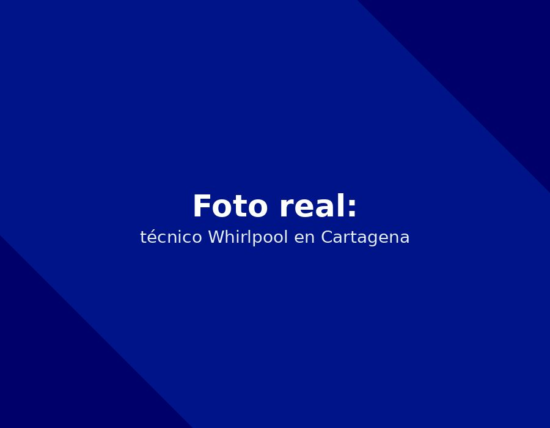

Nuestro servicio técnico Whirlpool en Cartagena atiende Manga con tiempo estimado de llegada entre 20 y 35 minutos. Reparamos, mantenemos e instalamos neveras y nevecones Whirlpool con repuestos originales y garantía escrita.

En Manga predominan casas familiares y edificios residenciales. Muchas neveras llevan años en servicio, por lo que las fallas más comunes que atendemos aquí son de compresor y sistemas de descongelamiento por desgaste, además del efecto de la humedad ambiental. Contamos con técnicos certificados en la tecnología Sixth Sense y sistemas de hielo de Whirlpool, lo que nos permite diagnosticar con precisión las fallas más comunes de esta zona.
En Manga, la falla que más atendemos en neveras Whirlpool es Neveras con tecnología Sixth Sense: Display digital apagado o códigos de error intermitentes. Si su equipo presenta síntomas similares, es momento de agendar una revisión antes de que el problema se extienda a otros componentes.
Para prevenir esta y otras fallas, recomendamos a los clientes de Manga seguir nuestra recomendación de mantenimiento: Si nota fluctuaciones en la temperatura a pesar de que las puertas estén cerradas, el sistema electrónico de sensores podría requerir revisión. Puede ver el resto de nuestras recomendaciones en la guía de mantenimiento preventivo Whirlpool.
"Mantenimiento preventivo por la humedad de Cartagena, muy profesionales."
— Álvaro D. (Manga)El tiempo estimado de llegada a Manga es entre 20 y 35 minutos desde que confirmamos la cita por WhatsApp.
Sí, diagnosticamos y reprogramamos o reemplazamos el módulo electrónico Sixth Sense con repuestos originales.
Cuéntanos la falla de tu nevera. Te confirmamos por WhatsApp en minutos.
☏ Escríbenos por WhatsApp